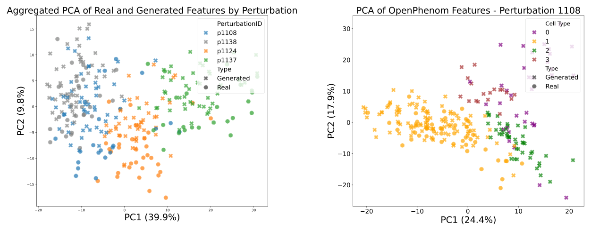

MorphGen is a latent diffusion transformer that generates Cell Painting images at their native 512 × 512 resolution, with all six fluorescence channels, conditioned on both the perturbation and the cell type. Each channel is encoded separately and denoised jointly, and during training the model's features are aligned with OpenPhenom, a foundation model for cell images. It lowers FID by more than 35% relative to MorphoDiff, and perturbation effects measured on generated cells match those measured on real ones.
Why generate cells at all?
Cell Painting is a high-content imaging assay that stains eight cellular compartments across six fluorescence channels. The resulting morphological fingerprints are remarkably useful: they cluster small molecules by mechanism of action, map gene function, and pick up disease-specific signatures for phenotypic drug discovery. Automated microscopes can image hundreds of thousands of cells per experiment.
Still, every experiment covers one condition. In RxRx1, the dataset we train on, there are 125,510 images from four human cell types (HUVEC, RPE, HepG2 and U2OS), each exposed to one of 1,108 siRNA knockdowns or 30 non-targeting controls. Picture the grid of perturbations by cell types: most of its cells were never imaged. A conditional generator that can fill in that grid, producing realistic images for any (perturbation, cell type) pair, would be an in silico surrogate for the experiment, a small step toward the "virtual instruments" that could prioritise which wet-lab experiments are worth running.
For that to be useful, the generated images have to carry biology, not only look plausible. That rules out a lot of shortcuts.
What was missing
When we started, image generators for Cell Painting fell short in three ways:
- Resolution and architecture. The IMPA pipeline, used by IMPA (an AdaIN-conditional GAN) and by CellFlux (conditional flow matching), crops native fields down to 96 × 96 nuclei-centred patches and reports RxRx1 results for U2OS only. That simplifies the problem but suppresses organelle-level detail.
- RGB compression. MorphoDiff adapts Stable Diffusion to Cell Painting by projecting the six channels into RGB, so that the pretrained VAE can be reused. The projection is irreversible and merges organelle-specific signals.
- A single cell type. MorphoDiff trains on HUVEC only, and because perturbations are encoded with scGPT embeddings, images of perturbations without an scGPT entry are discarded.
MorphGen is our attempt to close all three at once: full resolution, all six channels kept separate, and every RxRx1 plate across four cell lines and all perturbations.

One architecture, three design choices
1. Encode each organelle on its own
We keep a latent diffusion setup, which is easier to train than pixel-space diffusion and lets us reuse a strong pretrained autoencoder (Stable Diffusion's sd-vae-ft-mse, kept frozen). That VAE expects three-channel RGB input, so instead of compressing six channels into three we take each grayscale channel \(x^{(c)}\), stack it three times into \(\tilde{x}^{(c)}\), and encode it separately. The six channel latents are then concatenated into one tensor that the diffusion model sees jointly:
Encoding channels separately preserves each organelle's signal and keeps every channel interpretable, while denoising them jointly lets the model capture dependencies between organelles. The effect on reconstruction alone is large: with the frozen VAE, the RGB route has a reconstruction MSE of \(7.13 \times 10^{-4}\), while organelle-aware encoding reaches \(4.93 \times 10^{-5}\) per channel, and still \(4.06 \times 10^{-4}\) after converting its reconstructions to RGB for a like-for-like comparison (Table 5 in the paper).
2. A diffusion transformer, conditioned on biology
The denoiser is a Scalable Interpolant Transformer (SiT-XL/2). Global self-attention suits Cell Painting fields, where related signals sit in different channels and in spatially separated structures. Following the EDM formulation, noisy latents interpolate between data and noise, \(z_t = \alpha_t z_0 + \sigma_t \epsilon\), and the network \(f_\theta\) predicts the velocity of that path:
The condition \(c\) adds learnable embeddings of the perturbation \(e_p\) and the cell type \(e_{ct}\) to the timestep embedding \(e_t\). Because these embeddings are learned from the images themselves rather than looked up in an external gene model, nothing has to be thrown away: MorphGen trains on all RxRx1 plates. Keeping the two factors as separate embeddings also lets us combine them freely, for example swapping the cell type while keeping the perturbation fixed.
3. Align with a biological foundation model, during training only
Concatenating six latents makes the latent space 24 channels deep, which makes diffusion training harder. We tame it with representation alignment (REPA), which was introduced to align intermediate diffusion-transformer features with a strong self-supervised model such as DINOv2. We keep the objective but swap the teacher for OpenPhenom, a channel-agnostic masked autoencoder trained on Cell Painting images. For a clean image \(x\), OpenPhenom gives patch embeddings \(y^\star = F(x)\); the SiT hidden state at layer \(k\), passed through a small MLP \(h_\phi\), is pulled towards them:
with \(k = 8\) and \(\lambda = 0.5\), following REPA. This nudges the generator towards biologically meaningful features instead of spurious texture. OpenPhenom is a training-time teacher only: at sampling time it is not used at all.
Sampling
Generation starts from Gaussian noise in the 24-channel latent and runs a 50-step Euler–Maruyama sampler. The final latent is split back into six channel latents, each is decoded by the VAE, the three identical colour planes are averaged back to grayscale, and the six channels are stacked into a 6 × 512 × 512 image. As far as we know, MorphGen is the first model to jointly synthesise all six Cell Painting channels at this resolution. (Training used a batch size of 16 for up to 400k steps on 8 H100 GPUs.)
How good are the images?
To compare with MorphoDiff on its own terms we adopt its protocol: 50 randomly chosen siRNAs, HUVEC only, and our six-channel outputs converted to RGB with Recursion's visualisation script. Scores use 500 generated against 500 real images and three seeds, and we report FID unscaled (MorphoDiff reports it divided by 100). Even in this constrained setting, which does not use most of what MorphGen can do, it improves substantially on both baselines, and the gap carries over to the Rohban dataset (U2OS cells with ORF overexpression).
| Method | FID ↓ | KID ↓ |
|---|---|---|
| RxRx1 (HUVEC), 50 perturbations | ||
| Stable Diffusion | 115 | 0.11 |
| MorphoDiff | 78 | 0.05 |
| MorphGen | 50.2 ± 2.45 | 0.01 ± 0.000 |
| Rohban, 5 genes | ||
| Stable Diffusion | 326 | 0.45 |
| MorphoDiff | 251 | 0.33 |
| MorphGen | 100.24 ± 1.53 | 0.05 ± 0.014 |
| Rohban, 12 genes | ||
| Stable Diffusion | 317 | 0.45 |
| MorphoDiff | 277 | 0.38 |
| MorphGen | 123.93 ± 3.51 | 0.08 ± 0.017 |
Beyond RGB, MorphGen generates every organelle channel across all four cell types, something no baseline supports. Absolute FIDs are not comparable across channels, whose target distributions differ, so we also report a relative FID: the FID between generated and real images divided by the FID between two disjoint real subsets. A value of 1 means the generated set is as close to the real data as the real data is to itself.
| Metric | RGB | Nucleus | ER | Actin | Cyto | Nucleolus | Mito |
|---|---|---|---|---|---|---|---|
| FID ↓ | 50.2 | 27.6 | 48.1 | 57.6 | 49.6 | 43.6 | 59.0 |
| Rel. FID ↓ | 1.411 | 1.691 | 1.774 | 1.562 | 1.612 | 1.489 | 1.564 |
The nucleolus channel is modelled best (relative FID 1.489) and the ER is the hardest (1.774). Sampling by cell type without perturbation conditioning, and therefore without the augmentation needed to inflate small perturbation sets, gives relative FIDs between 1.136 (HUVEC) and 1.529 (HepG2), see Table 3 in the paper.

Do the images carry biology?
Low FID says the images look right to an Inception network. For screening, the question is whether the morphology is right, and whether a perturbation changes it the way the real perturbation does. We checked this with two independent feature spaces on HUVEC cells, using the four most frequent perturbations in the dataset: 1108, 1124, 1137 and the control 1138.
CellProfiler. From the classical CellProfiler pipeline (after variance thresholding, standardisation and removing collinear features), generated samples fall inside the real clusters of their perturbation while the perturbations stay separated, and the pairwise correlation structure of the top-10 PCA-selected features closely matches between real and generated data (Figures 3 and 4 in the paper).
OpenPhenom. The same picture holds in OpenPhenom's embedding space: real and generated embeddings overlap within each perturbation, and the deviation of each perturbation from the control is reproduced. Recall that sampling does not use OpenPhenom, so these images are generated and embedded independently.

Treatment effects. To make this quantitative we compute a conditional average treatment effect (CATE) in OpenPhenom feature space: the squared distance between the mean image-level embedding \(Y\) of control cells and that of perturbed cells of the same cell type,
computed once on real images and once on generated ones. The point is not that this distance is itself a biological quantity, but that population-level conclusions drawn from generated images should match those drawn from real ones. They do: the ordering and the magnitudes agree, with perturbation 1137 producing the largest deviation from control and 1108 the smallest.
| Comparison | CATEreal | CATEgen | ΔCATE ↓ |
|---|---|---|---|
| p1138 vs p1137 | 7.85 | 7.41 | 0.43 |
| p1138 vs p1124 | 2.13 | 2.31 | 0.18 |
| p1138 vs p1108 | 0.44 | 0.38 | 0.06 |
Downstream use. Generated images also transfer to classifiers. A linear perturbation classifier on CellProfiler features trained only on generated HUVEC images reaches 0.739 accuracy on real images, close to the 0.794 of training on real images (Table 12). In a harder ten-perturbation probe on OpenPhenom features, adding MorphGen images to the real training set raises accuracy on real test images from 67.7% to 71.2% (Table 13). Because OpenPhenom was used for alignment, we repeated the probe with an independently trained ResNet18 feature extractor and saw the same trend, 45.6% to 49.9% (Table 14).
What matters
Removing the alignment loss costs more than 10% in FID and over 20% in KID on the HUVEC benchmark: FID goes from 56.87 ± 3.35 without alignment to 50.2 ± 2.45 with it (Table 6). Together with the reconstruction comparison above, this points to the two halves of the design doing different jobs: per-channel encoding keeps the organelle information in the latent, and biological alignment makes the much larger latent space trainable and steers it towards morphology.
A first look at unseen combinations
A virtual instrument has to produce conditions it has not seen. As a proof of concept, we retrained MorphGen with one combination removed: perturbation 1137 on HUVEC, the most frequent cell type paired with the strongest of the four common perturbations. The held-out model's samples for that pair are essentially as good as those of the model that saw it, with FID 38.14 versus 38.07 against the same real images and ΔCATE 0.46 versus 0.43.
We do not read too much into this. The model has seen many HUVEC images and many cells under perturbation 1137 in other cell types, so this particular compositional gap is close to the training distribution. It is encouraging rather than conclusive. Deciding when to trust a generated sample for a condition without any real reference is a problem in its own right, which we study in Assessing Sample Quality in Conditional Generation under Compositional Shift.
Limitations
- Rare perturbations. We could not evaluate generalisation to uncommon perturbations: beyond HUVEC, RxRx1 has too few samples per perturbation for reliable metrics. Larger datasets such as RxRx3 exist but cover a single cell type.
- No extrapolation to novel conditions. Conditions are learned embeddings of known labels, so MorphGen cannot generate a perturbation it has never seen. Learning conditioning embeddings from image examples, which would remove the need for labels, is a direction we want to explore.
- Low-resolution pipelines. On the IMPA pipeline's 96 × 96 U2OS crops, which MorphGen was not trained for, CellFlux has a slightly lower relative FID than MorphGen (2.091 vs 2.260, Table 9). When each model's 96 × 96 crops are compared against its own target data, MorphGen is closer (1.417 vs 2.091, Table 8).
- Associations, not causes. CATE here is an associational difference in a feature space. Specific causal conclusions still depend on the usual assumptions holding on the real data.
Citation
@inproceedings{demirel2026morphgen,
title={MorphGen: Controllable and Morphologically Plausible Generative Cell-Imaging},
author={Berker Demirel and Marco Fumero and Theofanis Karaletsos and Francesco Locatello},
booktitle={The Fortieth Annual Conference on Neural Information Processing Systems},
year={2026},
url={https://arxiv.org/abs/2510.01298}
}